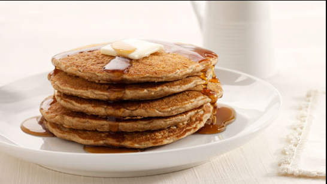

Papaya Salad Home

Description:
Pancakes are a soft, fluffy, and slightly sweet breakfast classic made from a simple batter of flour, eggs, milk,
and a leavening agent such as baking powder. Cooked on a griddle or frying pan until golden brown on both sides,
they have a tender texture and a light, airy bite. Their mild flavor makes them a versatile base, allowing for
endless toppings such as butter, maple syrup, fresh fruit, whipped cream, or even savory additions.
Enjoyed in many cultures around the world, pancakes vary in style—from thick and cake-like American pancakes to
thin, crepe-style versions found in Europe. They are often served as a comforting morning meal, but can also be
enjoyed as a dessert or snack. Whether stacked high with syrup dripping down the sides or filled with creative
flavor combinations, pancakes remain a timeless favorite for their simplicity, warmth, and satisfying taste.
Ingredients:
- 1½ cups all-purpose flour
- 3½ tsp baking powder
- 1 tsp salt
- 1 tbsp sugar
- 1¼ cups milk
- 1 egg
- 3 tbsp melted butter (plus extra for cooking)
- 1 tsp vanilla extract (optional)
Steps:
- Mix dry ingredients: In a large bowl, sift together flour, baking powder, salt, and sugar.
- Mix wet ingredients: In another bowl, whisk milk, egg, melted butter, and vanilla extract until smooth.
- Combine: Pour wet mixture into dry ingredients and stir gently just until combined. Some lumps are
okay—don’t overmix!
- Heat pan: Heat a non-stick skillet or griddle over medium heat and lightly grease with butter.
- Cook pancakes: Pour about ¼ cup batter per pancake onto the skillet. Cook until bubbles form on the surface
and edges look set, about 2–3 minutes. Flip and cook the other side until golden brown, about 1–2 minutes
more.
- Serve warm with syrup, fresh fruit, or your favorite toppings.